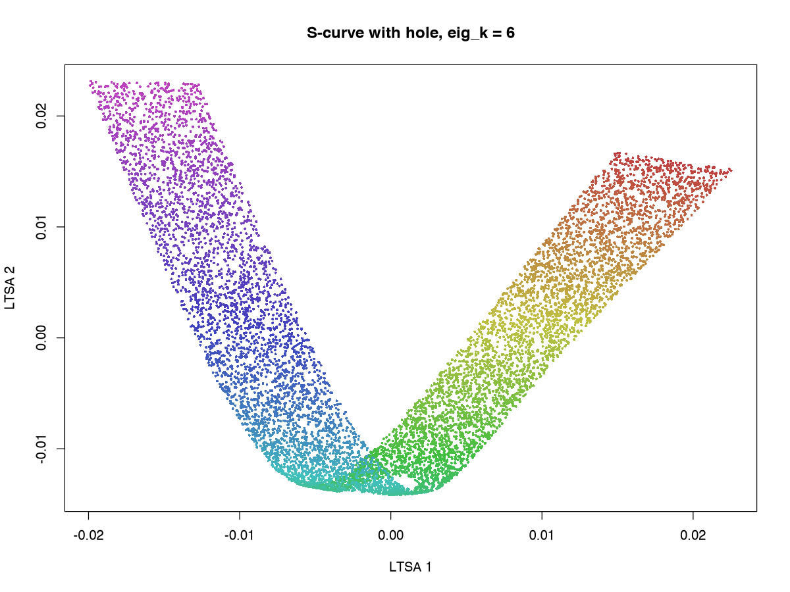
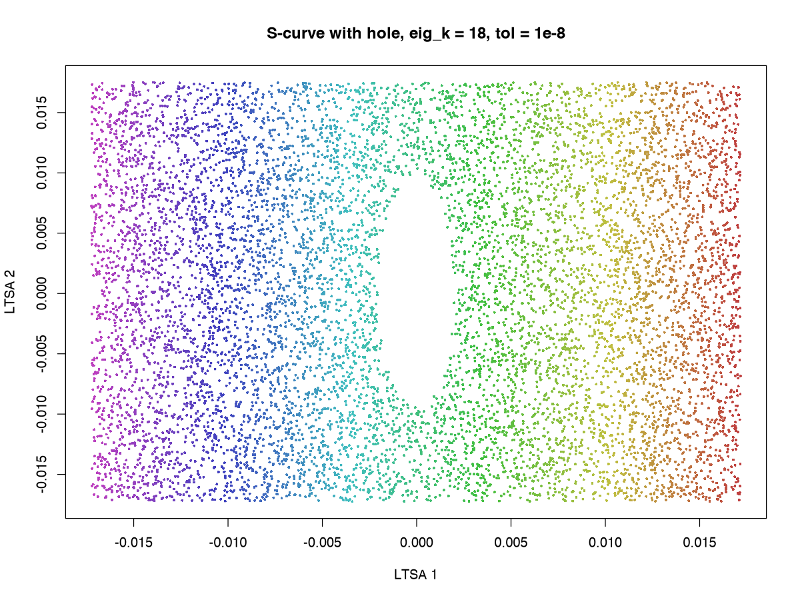

Diagnosing suspicious LTSA results
Source:vignettes/articles/numerical-diagnostics.Rmd
numerical-diagnostics.RmdWhen an LTSA map looks bent, collapsed, unstable, or unexpectedly different from another run, first determine which stage supplied the bad evidence. A neighbor graph can be disconnected, local neighborhoods can be rank deficient, the eigensolver can be inaccurate, or the requested dimensions can cut through a poorly separated low-frequency block. Those cases call for different fixes.
This article gives a question-to-action path through the result
object. See ?ltsa for
the exhaustive argument contract, and see Exploring LTSA spectral blocks for
worked examples of interpreting extra modes.
Start with the Result Object
Request output = "result", then inspect status and
messages before tuning anything. This deterministic Swiss-roll example
uses exact neighbors to remove neighbor-search randomness and retains
two extra modes so both the displayed and retained boundaries are
available.
set.seed(20260825)
n <- 1000
phi <- stats::runif(n, min = 1.5 * pi, max = 4.5 * pi)
swiss_roll <- data.frame(
x = phi * cos(phi),
y = phi * sin(phi),
z = stats::runif(n, max = 10)
)
set.seed(20260825)
diagnostic_fit <- ltsa(
swiss_roll,
ndim = 2,
n_neighbors = 15,
nn_method = "exact",
eig_method = "rspectra",
eig_k = 16,
output = "result",
spectral_dim = 4,
n_threads = 1,
n_assembly_threads = 1
)The displayed ndim prefix and the retained
spectral_dim block have separate status, messages, and
boundary gaps.
data.frame(
scope = c("displayed", "retained"),
status = c(
diagnostic_fit$eigen$status,
diagnostic_fit$eigen$spectral$status
),
boundary_gap = formatC(
c(
diagnostic_fit$eigen$diagnostics$scaled_boundary_gap,
diagnostic_fit$eigen$spectral$diagnostics$scaled_boundary_gap
),
digits = 4,
format = "e"
),
max_scaled_residual = formatC(
c(
max(diagnostic_fit$eigen$residuals),
max(diagnostic_fit$eigen$spectral$residuals)
),
digits = 4,
format = "e"
)
)
#> scope status boundary_gap max_scaled_residual
#> 1 displayed warning 1.2355e-06 4.4756e-07
#> 2 retained warning 2.9753e-05 4.4756e-07
diagnostic_fit$eigen$messages
#> [1] "Weak Ritz boundary gap after the selected block: 1.235e-06 < 1e-04."
diagnostic_fit$eigen$spectral$messages
#> [1] "Weak Ritz boundary gap after the retained block: 2.975e-05 < 1e-04."Now rule out structural problems in the operator.
data.frame(
components = diagnostic_fit$assembly$component_count,
rank_deficient_neighborhoods =
diagnostic_fit$assembly$rank_deficient_count,
minimum_local_rank = diagnostic_fit$assembly$min_local_rank,
requested_method = diagnostic_fit$eigen$method,
backend = diagnostic_fit$eigen$backend$name
)
#> components rank_deficient_neighborhoods minimum_local_rank requested_method
#> 1 1 0 2 rspectra
#> backend
#> 1 rspectraHere the selected scaled residuals are below the default diagnostic
tolerance, the effective-neighborhood graph has one component, and every
local basis has the requested rank. Both statuses instead point to weak
Ritz boundary gaps. The evidence therefore points away from a
disconnected graph, deficient local geometry, or gross eigensolver error
and toward inspecting neighboring modes together. The next action is to
retain a larger block from this operator, as the example already does,
rather than changing ndim and rebuilding it.
Choose the Next Action from the Signal
| Signal | What it supports | Next action |
|---|---|---|
Backend failure, status = "invalid", or a residual
message |
The candidate solve is not accurate enough | Name the backend explicitly and adjust its convergence controls; use
dense "eig" as a small-data reference |
Weak displayed gap or
near_zero_block_truncated = TRUE
|
The requested prefix is not isolated from adjacent modes | Keep ndim fixed, retain adjacent modes with
spectral_dim, and interpret the span rather than individual
coordinates |
assembly$component_count > 1 |
Effective neighborhoods form disconnected groups | Increase or revise neighborhood construction, or analyze the components separately |
Positive rank_deficient_count
|
Some neighborhoods cannot support the requested local tangent rank | Inspect repeated or degenerate observations and reconsider
n_neighbors or ndim
|
| Clean structural and solver diagnostics, but localized or collapsed coordinates | The estimator or selected span may not match the intended structure | Inspect support, compare ordinary and normalized LTSA on one fixed graph, and verify the scientific target |
Connectedness does not prove that a graph is well coupled, and a
small residual does not prove that a chosen boundary is meaningful. Use
each field to rule in or out its own failure class rather than treating
status as a single quality score.
Keep the Three Dimension Controls Distinct
-
ndimsets the local tangent rank, changes the LTSA operator, and sets the displayed prefix. -
spectral_dimretains more nonconstant modes from that fixed operator. It is the inspection control for a weak displayed boundary. -
eig_kgives the eigensolver and Rayleigh–Ritz step a wider candidate span. It can recover a missing candidate direction but does not decide how many modes the result retains.
A stricter tolerance cannot separate a genuinely repeated eigenspace.
When eigen$diagnostics$near_zero_block_truncated is
TRUE, individual coordinates inside the observed near-zero
block are not uniquely identifiable; reason about the subspace
instead.
When a Tighter Solve Also Needs a Wider Candidate Span
This S-curve-with-a-hole example exercises a different failure. It
generates 10,000 points with snedata; removing the hole
leaves 9,489 observations in this run. We build one self-first
15-neighbor graph with one thread and reuse it for all three solves.
Each solve resets the eigensolver seed.
In this run:
| Candidate request | Outcome | Minimum latent-coordinate R-squared |
|---|---|---|
eig_k = 6, tol = 1e-6
|
Warning result; bent two-dimensional span | 0.0463 |
eig_k = 6, tol = 1e-8
|
RSpectra fails with 0 of 6 candidates converged | — |
eig_k = 18, tol = 1e-8
|
Warning result; expected unrolled span recovered | 0.999999 |
To calculate R-squared, regress each original latent coordinate on
the two embedding coordinates. This measures how well the embedding can
recover that coordinate and is unchanged by sign flips, rotations, or
rescaling. The wider strict result recovers the expected unrolled
geometry; the hole is also visible in the generated figure. Its status
remains "warning" because the displayed Ritz boundary is
weak, so the example demonstrates successful geometric recovery without
claiming that the two-mode boundary is strongly isolated.


Here’s the central comparison. Install snedata with
pak::pak("jlmelville/snedata") and use the same graph for
all three fits. Each neighborhood includes the observation itself and
fourteen other points.
set.seed(42)
s_curve <- snedata::s_curve_hole(n_samples = 10000)
X <- as.matrix(s_curve[, c("x", "y", "z")])
set.seed(42)
nn <- rnndescent::nnd_knn(X, k = 16, n_threads = 1)
graph <- t(vapply(seq_len(nrow(X)), function(i) {
neighbors <- nn$idx[i, order(nn$dist[i, ], nn$idx[i, ])]
c(i, head(neighbors[neighbors != i], 14))
}, integer(15)))
fit_s_curve <- function(eig_k, tol) {
set.seed(42)
flotsam::ltsa(
X, n_neighbors = 15, nn_method = graph, eig_method = "rspectra",
eig_k = eig_k, tol = tol, output = "result"
)
}
narrow <- fit_s_curve(eig_k = 6, tol = 1e-6)
strict_narrow <- tryCatch(
fit_s_curve(eig_k = 6, tol = 1e-8), error = function(e) e
)
wide <- fit_s_curve(eig_k = 18, tol = 1e-8)
strict_narrow
narrow$eigen$status
wide$eigen$status
plot(narrow$embedding, col = s_curve$color, pch = 16, cex = 0.45)
plot(wide$embedding, col = s_curve$color, pch = 16, cex = 0.45)The exact solver outcome can vary with the software and platform. The example plots the coordinates; the reported R-squared values above also use the known latent coordinates of this generated surface.
Tune the Selected Backend, Not an Unspecified Route
If residuals or a hard backend failure point to solver accuracy, select the backend explicitly before passing its controls:
strict_fit <- ltsa(
swiss_roll,
eig_method = "rspectra",
eig_k = 16,
output = "result",
tol = 1e-8,
maxitr = 5000,
ncv = 40
)The package default tol = 1e-6 is looser than RSpectra’s
own default. Moving from 1e-6 to 1e-8 is
therefore tightening the tolerance. If that stricter
solve cannot return the requested candidate span, increasing
eig_k may help, as in the S-curve example; simply
tightening tol, enlarging ncv, or raising the
iteration limit does not recover a direction absent from the candidate
span.
Backend-specific controls passed through ... are
deliberately curated:
-
eig_method = "rspectra":tol,maxitr, andncv; -
eig_method = "irlba":tol,maxit, andreorth; and -
eig_method = "svdr":tol,it, andextra.
resid_tol and gap_tol change diagnostics,
not the selected route. dense_n and
dense_fraction apply only to
eig_method = "auto", while shift_eps applies
only to an explicit iterative method. Unknown controls and controls for
another backend are rejected.
For a small diagnostic case, eig_method = "eig" (or its
"eigen" alias) computes the full dense eigensystem and
provides a useful eigenvalue or eigenspace reference. It is too
expensive for large datasets, and repeated eigenspaces still make
individual eigenvectors non-unique.
Why eig_k Can Matter
flotsam reflects the alignment operator as \mu I - B, turning the lowest directions of
B into the largest algebraic directions
requested from an iterative backend. This shifted-candidate approach was
motivated by practical problems with clustered low eigenvalues and by a
Spectra
discussion.
After the candidate solve, a Rayleigh–Ritz step removes the known
constant direction and polishes the requested span. It can resolve mixed
or rotated vectors already present in that span, but it cannot recover
an entirely missing direction. That is why a wider eig_k
can change a result even when the requested ndim is
unchanged.
With eig_method = "auto", flotsam uses
dense base::eigen() when the input is small or the
candidate request is a large fraction of the sample count; otherwise it
uses RSpectra. eigen$method records the requested policy
and eigen$backend$name records the backend that actually
ran. Even on the dense route, eig_k bounds the candidate
span passed to Rayleigh–Ritz.
Use output = "B" to inspect the operator without running
final eigenanalysis. With normalize = FALSE this returns
the raw alignment matrix; with normalize = TRUE it returns
the normalized operator used by the generalized estimator.
Normalization Changes the Estimator
With normalize = TRUE, flotsam solves
Bv = \lambda Dv, \qquad D = \operatorname{diag}(B),
through the symmetric operator D^{-1/2} B
D^{-1/2} and maps the selected vectors back. Standard LTSA uses
ordinary orthogonality and centering; normalized LTSA uses
D-weighted constraints. This is a different estimator, not
merely a better-conditioned route to the same coordinates, and
D is not ordinary graph degree.
When comparing the two estimators, freeze and reuse the neighbor graph, reset the solver seed before each fit, and keep thread and solver settings equal. Then compare both spectral evidence and support. Jacobi-Normalized LTSA explains the Jacobi weighting and compares its visual effects across several datasets. The spectral-block article addresses the separate choice of which coordinates to retain and inspect.
Threading and Cross-Implementation Checks
n_threads controls computed-neighbor search;
n_assembly_threads controls construction of the alignment
matrix. Serial settings are the reproducible default. If outer LTSA
assembly and the linked linear algebra library both use multiple
threads, they can oversubscribe the machine. For MKL, one possible shell
configuration is:
The scikit-learn LTSA implementation uses exact neighbor-search
strategies and dense eigenanalysis or ARPACK. flotsam can
instead use approximate neighbor descent and shifted RSpectra or
irlba candidate solves. A cross-implementation comparison
is only diagnostic after matching the input, neighbor graph, requested
dimensions, and tolerances as closely as the interfaces allow; otherwise
a difference does not identify which stage caused it.